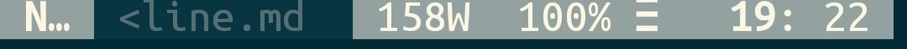
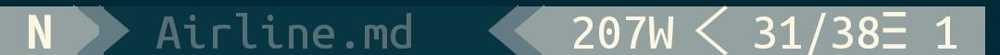
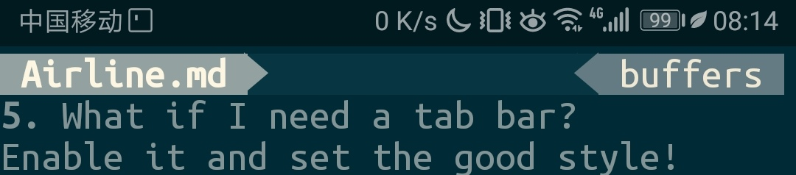
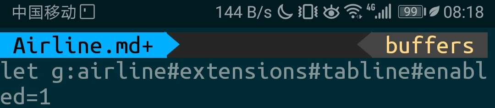
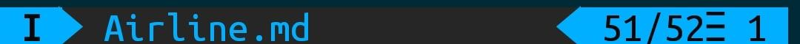

Airline Setup
vim airline is a tool to enhance the looking of vim. And it is a little tricky to setup especially in termux.
As I did not install any package manager for vim
(in fact, I failed to install and setup Vundle),
I need to clone the repo to ~/.vim/pack/dist/start/ to let vim automatically load the package.
And I see the airline when I opened vim.
By the way, all packages I tested (NERDTree, indentLine, gitgutter) all support this kind of operation.
Trouble Shooting
Only mode and filename is displayed!
For termux disable the auto truncate of section A,B,C and Z is perfect. That is, let other sections truncate at a larger width than your screen.
let g:airline#extensions#default#section_truncate_width = {
\ 'warning': 80,
\ 'error': 80,
\ 'x': 80,
\ 'y': 80}
Note: Only when nocompatible set can you use
\to continue line.

No fancy > s there!
Enable fancy fonts!
let g:airline_powerline_fonts = 1
There are dots following the mode!
Set the name of the modes!
let g:airline_mode_map = {
\ 'c': 'C',
\ 'n': 'N',
\ 'V': 'V',
\ 'i':'I'}
I do not need the section Z so long!
Set the custom section z!
let g:airline_section_z = '%2l/%L☰%2v'

What if I need a tab bar?
Enable it and set the good style!
let g:airline#extensions#tabline#enabled=1
let g:airline#extensions#tabline#formatter = 'unique_tail'

The word count is annoying!
Disable it!
let g:airline#extensions#wordcount#enabled = 0
Fancy style?
Yes Badwolf!
let g:airline_theme = 'badwolf'

Do not want extra > s?
Disable it!
let g:airline_skip_empty_sections = 1
